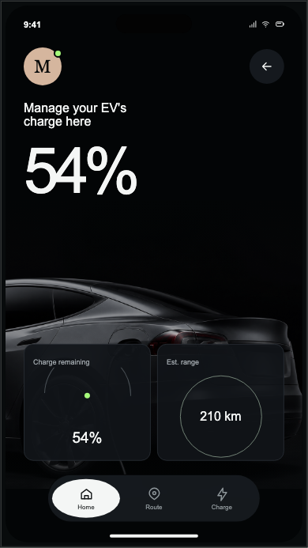

ONDesign · AI UI DESIGN WORKFLOW
用 AI 做 UI，从来没有这么清晰。
不需要先懂代码，从一个真实参考开始。
FIND YOUR DIRECTION
找到适合你的设计方向


不知道搜什么？试试 Dashboard、Editorial、Mobile 或 Apple。
MADE WITH
ONDesign




REAL INTERFACE CASES
先找到对的方向，再开始生成。
不是一组只能收藏的封面。每个案例都帮助你识别布局、组件、状态与视觉语言。
ONE CONNECTED SYSTEM
从“我喜欢这个”，到“把它做出来”。

WHY ONDESIGN
不是再收藏一张图，而是让参考真正变得可执行。
ONDesign 把“看起来不错”拆成可以讨论和修改的决定：页面结构、视觉层级、组件模式、交互状态、响应式与设计语言。
学习界面语言 ↗THE ONDESIGN METHOD
一条从参考到页面的清晰路径。
- 01EXPLORE
寻找真实案例与视觉方向
- 02DECOMPOSE
拆解页面、组件与状态
- 03DEFINE
确定 UI 词汇与 Design DNA
- 04BUILD
让 AI 生成可运行的页面
- 05VERIFY
检查细节并局部迭代